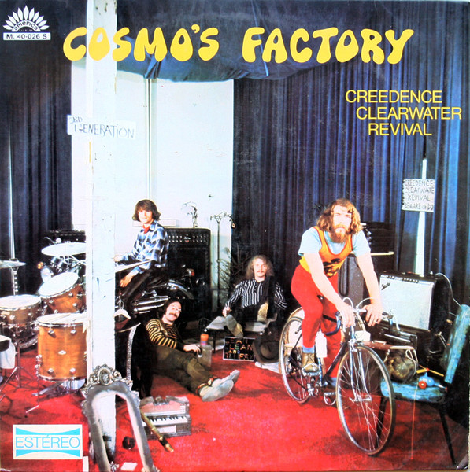
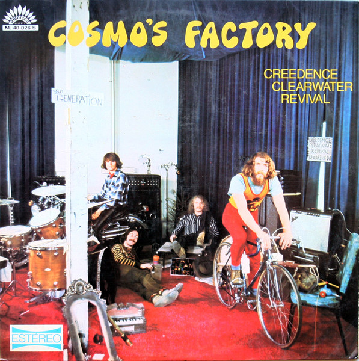

Creedence Clearwater Revival o Creedence (a veces estilizado como CCR) fue una banda estadounidense de rock, popular a fines de la década de 1960 y comienzos de los 70. Está considerada una de las mejores bandas de la historia y una de las más populares e influyentes. El estilo musical de Creedence combinó el Roots rock con Swamp blues y elementos del Blue-eyed soul y Rock Psicodélico con claras influencias de la música inspirada en las raíces tradicionales de la música norteamericana, no existía en la época en que se formó CCR, pero hoy en día sería perfectamente aplicable a su estética. Por su estilo de música tan peculiar, se les considera los reyes de la carretera, pues su música te lleva a imaginarte que estás conduciendo por una autopista. En sus primeros álbumes tenía un sonido bastante psicodélico y considerados como la banda precursora del Grunge. La revista Rolling Stone los ubicó en el puesto 82 de los mejores artistas de la historia.